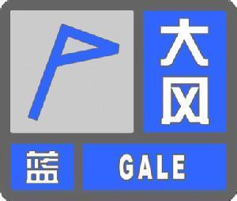
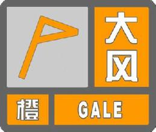
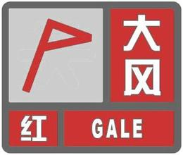

大风
是指风力大到足以危害农业生产及其他经济建设的风
一般定义是近地面层风力达蒲福风级8级(平均风速17.2～20.7米/秒)或以上的风。中国气象观测业务规定，瞬时风速达到或超过17米/秒(或目测估计>
风力达到或超过8级)的风为大风。有大风出现的一天称为大风日。在中国天气预报业务中则规定，蒲福风级6级(平均风速为10.8--13.8米/秒)或以上的风>
为大风。 大风会毁坏地面设施和建筑物；海上的大风则影响航海、海上施工和捕捞等作业，为害甚大，是一种灾害性天气。
产生大风的天气系统很多，如冷锋、雷暴、飑线和气旋等。热带风暴的大风出现在涡旋的强气压梯度区内，呈逆时针旋转；冷锋大风位于锋面过境之>
后；雷暴和飑线的大风则发生在它们过境时，雷雨拖带的下沉气流至近地面的流出气流中。地形的狭管效应可以使风速增大，使某些地区成为大风多发区>
，如新疆北部的阿拉山口、台湾海峡等地区。
大风预警信号 - 蓝色预警
标准

24小时内可能受大风影响，平均风力可达6级以上，或者阵风7级以上；或者已经受大风影响，平均风力为6～7级，或者阵风7～8级并可能持续。
防御措施
- 政府及相关部门按照职责做好防大风工作。
- 关好门窗，加固围板、棚架、广告牌等易被风吹动的搭建物，妥善安置易受大风影响的室外物品，遮盖建筑物资。
- 相关水域水上作业和过往船舶采取积极的应对措施，如回港避风或者绕道航行等。
- 行人注意尽量少骑自行车，刮风时不要在广告牌、临时搭建物等下面逗留。
- 有关部门和单位注意森林、草原等防火。
大风预警信号 - 黄色预警
标准
12小时内可能受大风影响，平均风力可达8级以上，或者阵风9级以上；或者已经受大风影响，平均风力为8～9级，或者阵风9～10级并可能持续。
防御措施
- 政府及相关部门按照职责做好防大风工作。
- 停止露天活动和高空等户外危险作业，危险地带人员和危房居民尽量转到避风场所避风。
- 相关水域水上作业和过往船舶采取积极的应对措施，如回港避风或者绕道航行等。
- 切断户外危险电源，妥善安置易受大风影响的室外物品，遮盖建筑物资
- 机场、高速公路等单位应当采取保障交通安全的措施，有关部门和单位注意森林、草原等防火
大风预警信号 - 橙色预警
标准

6小时内可能受大风影响，平均风力可达10级以上，或者阵风11级以上；或者已经受大风影响，平均风力为10～11级，或者阵风11～12级并可能持续
防御措施
- 政府及相关部门按照职责做好防大风应急工作。
- 房屋抗风能力较弱的中小学校和单位应当停课、停业，人员减少外出。
- 相关水域水上作业和过往船舶应当回港避风，加固港口设施，防止船舶走锚、搁浅和碰撞。
- 切断危险电源，妥善安置易受大风影响的室外物品，遮盖建筑物资。
- 机场、铁路、高速公路、水上交通等单位应当采取保障交通安全的措施，有关部门和单位注意森林、草原等防火。
大风预警信号 - 红色预警
标准

6小时内可能受大风影响，平均风力可达12级以上，或者阵风13级以上；或者已经受大风影响，平均风力为12级以上，或者阵风13级以上并可能持续。
防御措施
- 政府及相关部门按照职责做好防大风应急和抢险工作。
- 人员应当尽可能停留在防风安全的地方，不要随意外出。
- 回港避风的船舶要视情况采取积极措施，妥善安排人员留守或者转移到安全地带。
- 切断危险电源，妥善安置易受大风影响的室外物品，遮盖建筑物资。
- 机场、铁路、高速公路、水上交通等单位应当采取保障交通安全的措施，有关部门和单位注意森林、草原等防火。